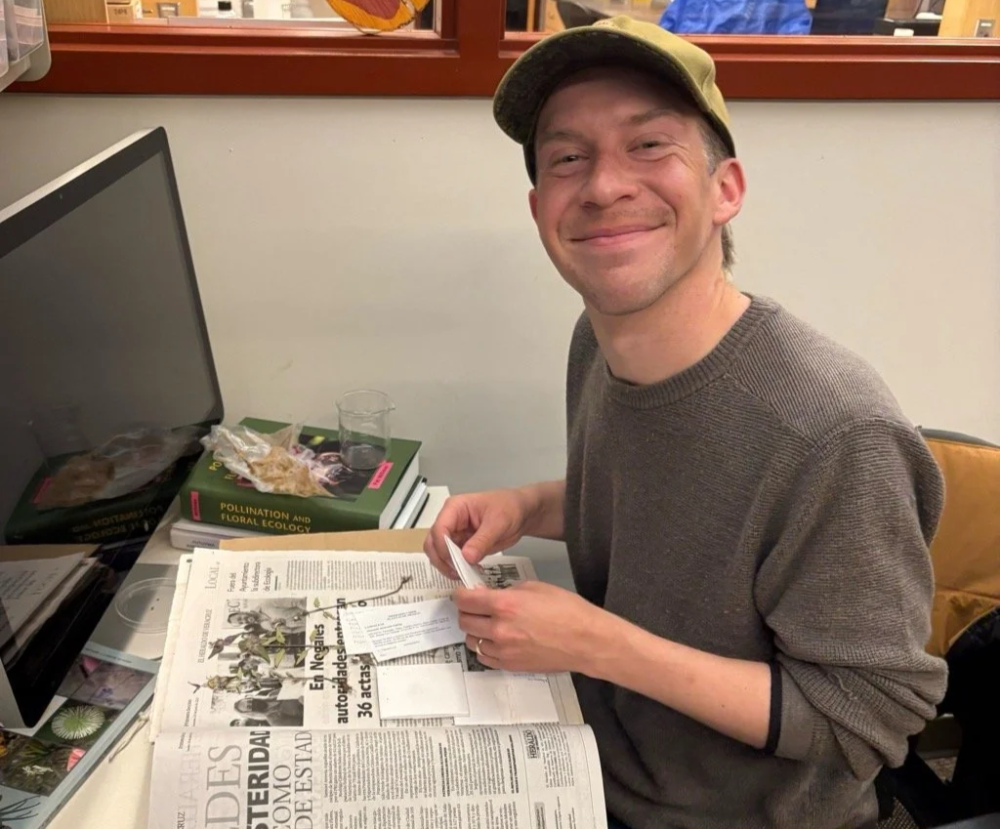

Principal investigator
Patrick F. McKenzie he / him
Patrick is an evolutionary botanist interested in flowering plants, especially in North American systems. He did his Ph.D. at Columbia University and postdoctoral research at Harvard’s Arnold Arboretum.
Outside the lab, he enjoys birding, botanizing, photography, and playing the banjo.